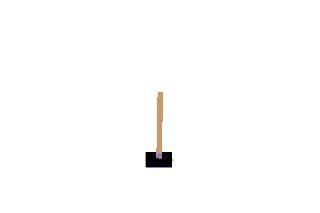
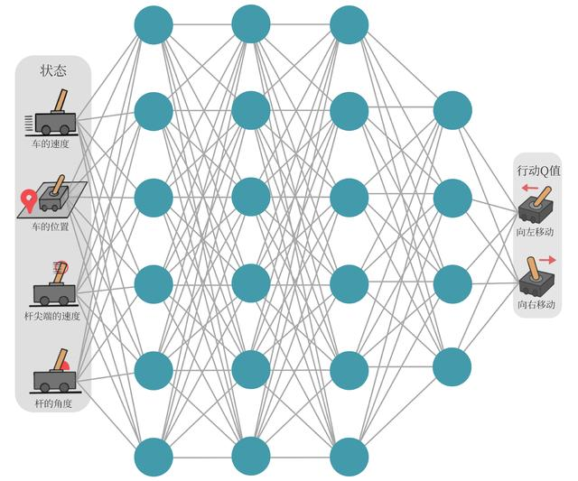
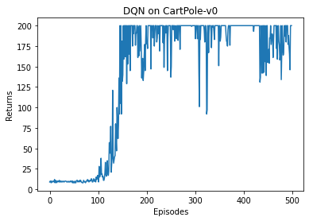
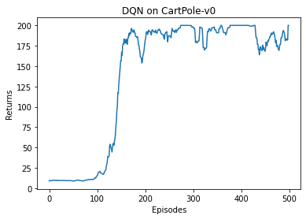

在第 5 章讲解的 Q-learning 算法中，我们以矩阵的方式建立了一张存储每个状态下所有动作值的表格。表格中每个动作价值表示在某状态下选择某动作后遵循策略能得到的期望回报。然而这种表格存储方式只在状态和动作离散且空间较小时适用。当状态或者动作数量非常大的时候，这种做法就不适用了。例如当状态是 RGB 图像时，假设图像很大，状态数量极多，存储这样的值表格不现实。更甚者，当状态或者动作连续的时候，就有无限个状态动作对，我们更加无法使用这种表格形式来记录各个状态动作对的值。
对于这种情况需要用函数拟合方法来估计值，将复杂的值表格视作数据，用参数化函数来拟合。很显然，这种函数拟合的方法存在一定的精度损失，因此被称为近似方法。DQN 算法可用来解决连续状态下离散动作的问题。
以车杆（CartPole）环境为例，其状态值是连续的，动作值是离散的。

在车杆环境中，有一辆小车，智能体的任务是通过左右移动保持车上的杆竖直，若杆倾斜度数过大，或车子偏离初始位置过大，或坚持时间到达 200 帧，则游戏结束。智能体状态是维数为 4 的向量，每一维连续，动作离散，动作空间大小为 2。在游戏中每坚持一帧，智能体能获得分数为 1 的奖励，坚持时间越长，则最后的分数越高，坚持 200 帧即可获得最高的分数。
| 维度 | 意义 | 最小值 | 最大值 |
|---|---|---|---|
| 0 | 车的位置 | -2.4 | 2.4 |
| 1 | 车的速度 | -Inf | Inf |
| 2 | 杆的角度 | ~-41.8° | ~41.8° |
| 3 | 杆尖端的速度 | -Inf | Inf |
| 标号 | 动作 |
|---|---|
| 0 | 向左移动小车 |
| 1 | 向右移动小车 |
现在想在类似车杆的环境中得到动作价值函数，由于状态每一维度值连续，无法用表格记录，因此一个常见的解决方法便是使用函数拟合（function approximation）的思想。由于神经网络具有强大表达能力，可以用神经网络来表示函数 $Q_\omega(s,a)$。若动作连续，神经网络输入是状态 $s$ 和动作 $a$，输出一个标量表示价值。若动作离散，可以只将状态 $s$ 输入，同时输出每一个动作的值。通常 DQN（以及 Q-learning）只能处理动作离散的情况，因为更新过程中有 $\max_a$ 操作。我们将用于拟合函数的神经网络称为Q 网络。

那么 Q 网络的损失函数是什么呢？我们先来回顾一下 Q-learning 的更新规则（参见 5.5 节）：
上述公式用时序差分（temporal difference，TD）学习目标来增量式更新，也就是说要使 $Q(s, a)$ 和 TD 目标 $r + \gamma \max_{a'} Q(s', a')$ 靠近。于是，对于一组数据，我们可以很自然地将 Q 网络的损失函数构造为均方误差的形式：
至此，我们就可以将 Q-learning 扩展到神经网络形式——深度 Q 网络（deep Q network，DQN）算法。由于 DQN 是离线策略算法，因此我们在收集数据的时候可以使用一个 $\epsilon$-贪婪策略来平衡探索与利用，将收集到的数据存储起来在后续训练中使用。DQN 中还有两个非常重要的模块——经验回放和目标网络，它们能够帮助 DQN 取得稳定、出色的性能。
在一般的有监督学习中，假设训练数据是独立同分布的，每次训练时随机采样数据进行梯度下降，每个训练数据会被使用多次。在原来的 Q-learning 算法中，每一个数据只会用来更新一次值。为了更好地将 Q-learning 和深度神经网络结合，DQN 采用了经验回放方法，具体做法为维护一个回放缓冲区，将每次从环境中采样得到的四元组数据存储到回放缓冲区中，训练时再从中随机采样若干数据来训练。这么做有两个作用：
（1）使样本满足独立假设。在 MDP 中交互采样的数据不满足独立假设，因为状态与上一时刻有关。非独立同分布的数据对训练神经网络有很大的影响，会使神经网络拟合到最近训练的数据上。采用经验回放可打破样本相关性。
（2）提高样本效率。每一个样本可以被使用多次，十分适合深度神经网络的梯度学习。
DQN 算法最终更新的目标是让 Q 值逼近 TD 目标，由于 TD 误差目标本身包含神经网络输出，更新参数时目标不断改变，这非常容易造成神经网络训练的不稳定性。DQN 使用目标网络的思想：既然训练过程中 Q 网络的不断更新会导致目标不断发生改变，不如暂时先将 TD 目标中的 Q 网络固定住。需要利用两套 Q 网络：
算法：DQN
用随机的网络参数 $\omega$ 初始化网络
复制相同的参数来初始化目标网络 $\omega^{-}$
初始化经验回放池
for 序列 do
获取环境初始状态 s
for 时间步 do
根据当前网络以 $\epsilon$-贪婪策略选择动作
执行动作，获得回报，环境状态变为下一状态
将数据存储进回放池中
若回放池中数据足够，从中采样若干个数据
对每个数据，用目标网络计算 TD 目标
最小化目标损失，以此更新当前网络
更新目标网络
end for
end for
接下来，我们就正式进入 DQN 算法的代码实践环节。采用 CartPole-v0 测试环境，状态空间相对简单只有 4 个变量，网络结构设计也简单：采用一层 128 个神经元的全连接并以 ReLU 作为激活函数。当遇到更复杂的诸如以图像作为输入的环境时，我们可以考虑采用深度卷积神经网络。
从 DQN 算法开始，我们将会用到 rl_utils 库，它包含一些专门为本书准备的函数，如绘制移动平均曲线、计算优势函数等。
import random
import gym
import numpy as np
import collections
from tqdm import tqdm
import torch
import torch.nn.functional as F
import matplotlib.pyplot as plt
import rl_utils首先定义经验回放池的类，主要包括加入数据、采样数据两大函数。
class ReplayBuffer:
''' 经验回放池 '''
def __init__(self, capacity):
self.buffer = collections.deque(maxlen=capacity)
def add(self, state, action, reward, next_state, done):
self.buffer.append((state, action, reward, next_state, done))
def sample(self, batch_size):
transitions = random.sample(self.buffer, batch_size)
state, action, reward, next_state, done = zip(*transitions)
return np.array(state), action, reward, np.array(next_state), done
def size(self):
return len(self.buffer)然后定义一个只有一层隐藏层的 Q 网络。
class Qnet(torch.nn.Module):
''' 只有一层隐藏层的Q网络 '''
def __init__(self, state_dim, hidden_dim, action_dim):
super(Qnet, self).__init__()
self.fc1 = torch.nn.Linear(state_dim, hidden_dim)
self.fc2 = torch.nn.Linear(hidden_dim, action_dim)
def forward(self, x):
x = F.relu(self.fc1(x))
return self.fc2(x)有了这些基本组件之后，接来下开始实现 DQN 算法。
class DQN:
''' DQN算法 '''
def __init__(self, state_dim, hidden_dim, action_dim, learning_rate, gamma,
epsilon, target_update, device):
self.action_dim = action_dim
self.q_net = Qnet(state_dim, hidden_dim,
self.action_dim).to(device)
self.target_q_net = Qnet(state_dim, hidden_dim,
self.action_dim).to(device)
self.optimizer = torch.optim.Adam(self.q_net.parameters(),
lr=learning_rate)
self.gamma = gamma
self.epsilon = epsilon
self.target_update = target_update
self.count = 0
self.device = device
def take_action(self, state):
if np.random.random() < self.epsilon:
action = np.random.randint(self.action_dim)
else:
state = torch.tensor([state], dtype=torch.float).to(self.device)
action = self.q_net(state).argmax().item()
return action
def update(self, transition_dict):
states = torch.tensor(transition_dict['states'],
dtype=torch.float).to(self.device)
actions = torch.tensor(transition_dict['actions']).view(-1, 1).to(
self.device)
rewards = torch.tensor(transition_dict['rewards'],
dtype=torch.float).view(-1, 1).to(self.device)
next_states = torch.tensor(transition_dict['next_states'],
dtype=torch.float).to(self.device)
dones = torch.tensor(transition_dict['dones'],
dtype=torch.float).view(-1, 1).to(self.device)
q_values = self.q_net(states).gather(1, actions)
max_next_q_values = self.target_q_net(next_states).max(1)[0].view(
-1, 1)
q_targets = rewards + self.gamma * max_next_q_values * (1 - dones)
dqn_loss = torch.mean(F.mse_loss(q_values, q_targets))
self.optimizer.zero_grad()
dqn_loss.backward()
self.optimizer.step()
if self.count % self.target_update == 0:
self.target_q_net.load_state_dict(
self.q_net.state_dict())
self.count += 1一切准备就绪，开始训练并查看结果。我们之后会将这一训练过程包装进 rl_utils 库中，方便之后要学习的算法的代码实现。
lr = 2e-3
num_episodes = 500
hidden_dim = 128
gamma = 0.98
epsilon = 0.01
target_update = 10
buffer_size = 10000
minimal_size = 500
batch_size = 64
device = torch.device("cuda") if torch.cuda.is_available() else torch.device(
"cpu")
env_name = 'CartPole-v0'
env = gym.make(env_name)
random.seed(0)
np.random.seed(0)
env.seed(0)
torch.manual_seed(0)
replay_buffer = ReplayBuffer(buffer_size)
state_dim = env.observation_space.shape[0]
action_dim = env.action_space.n
agent = DQN(state_dim, hidden_dim, action_dim, lr, gamma, epsilon,
target_update, device)
return_list = []
for i in range(10):
with tqdm(total=int(num_episodes / 10), desc='Iteration %d' % i) as pbar:
for i_episode in range(int(num_episodes / 10)):
episode_return = 0
state = env.reset()
done = False
while not done:
action = agent.take_action(state)
next_state, reward, done, _ = env.step(action)
replay_buffer.add(state, action, reward, next_state, done)
state = next_state
episode_return += reward
if replay_buffer.size() > minimal_size:
b_s, b_a, b_r, b_ns, b_d = replay_buffer.sample(batch_size)
transition_dict = {
'states': b_s,
'actions': b_a,
'next_states': b_ns,
'rewards': b_r,
'dones': b_d
}
agent.update(transition_dict)
return_list.append(episode_return)
if (i_episode + 1) % 10 == 0:
pbar.set_postfix({
'episode':
'%d' % (num_episodes / 10 * i + i_episode + 1),
'return':
'%.3f' % np.mean(return_list[-10:])
})
pbar.update(1)episodes_list = list(range(len(return_list)))
plt.plot(episodes_list, return_list)
plt.xlabel('Episodes')
plt.ylabel('Returns')
plt.title('DQN on {}'.format(env_name))
plt.show()
mv_return = rl_utils.moving_average(return_list, 9)
plt.plot(episodes_list, mv_return)
plt.xlabel('Episodes')
plt.ylabel('Returns')
plt.title('DQN on {}'.format(env_name))
plt.show()

可以看到，DQN 的性能在 100 个序列后很快得到提升，最终收敛到策略的最优回报值 200。也可以看到 DQN 性能提升后会持续出现一定程度震荡，这主要是神经网络过拟合到一些局部经验数据后由运算带来的影响。
在本书前面章节所述的强化学习环境中，我们都使用非图像的状态作为输入，但在一些视频游戏中智能体不能直接获取状态信息，只能获取屏幕图像。要让智能体和人一样玩游戏，我们需要让智能体学会以图像作为状态时的决策。可以利用 DQN 算法将卷积层加入网络结构以提取图像特征。以图像为输入的 DQN 算法代码不同之处主要在 Q 网络结构和数据输入。DQN 网络通常会将最近的几帧图像一起作为输入，从而感知环境的动态性。由于代码需要运行较长时间，不展示训练结果。
class ConvolutionalQnet(torch.nn.Module):
''' 加入卷积层的Q网络 '''
def __init__(self, action_dim, in_channels=4):
super(ConvolutionalQnet, self).__init__()
self.conv1 = torch.nn.Conv2d(in_channels, 32, kernel_size=8, stride=4)
self.conv2 = torch.nn.Conv2d(32, 64, kernel_size=4, stride=2)
self.conv3 = torch.nn.Conv2d(64, 64, kernel_size=3, stride=1)
self.fc4 = torch.nn.Linear(7 * 7 * 64, 512)
self.head = torch.nn.Linear(512, action_dim)
def forward(self, x):
x = x / 255
x = F.relu(self.conv1(x))
x = F.relu(self.conv2(x))
x = F.relu(self.conv3(x))
x = F.relu(self.fc4(x))
return self.head(x)本章讲解了 DQN 算法，其主要思想是用一个神经网络来表示最优策略的函数，然后利用 Q-learning 的思想进行参数更新。为了保证训练的稳定性和高效性，DQN 引入了经验回放和目标网络两大模块。
在 2013 年的 NIPS 深度学习研讨会上，DeepMind 公司的研究团队发表了 DQN 论文，首次展示了通过卷积神经网络接受像素输入来玩各种雅达利游戏的强化学习算法，由此拉开了深度强化学习的序幕。DQN 是深度强化学习的基础，掌握了该算法才算是真正进入了深度强化学习领域，本书还有更多深度强化学习算法等待读者探索。
[1] VOLODYMYR M, KAVUKCUOGLU K, SILVER D, et al. Human-level control through deep reinforcement learning [J]. Nature, 2015, 518(7540): 529-533.
[2] VOLODYMYR M, KAVUKCUOGLU K, SILVER D, et al. Playing atari with deep reinforcement learning [C]//NIPS Deep Learning Workshop, 2013.
内容来源：《动手学强化学习》(hrl.boyuai.com) | 离线版本